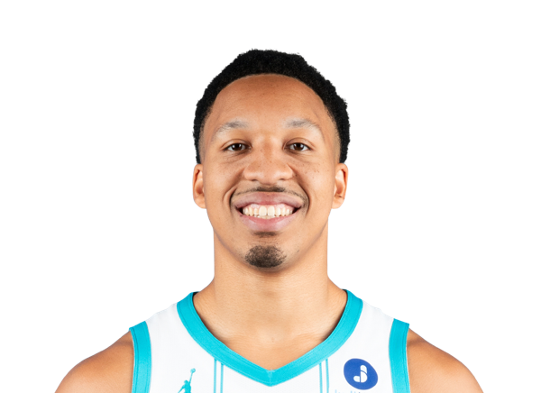

BASKETBALLKEEP
Dynasty · Redraft · Hardwood

PF · CHA
Grant Williams
Keep #272
Board #274
Age 27
578 BK Value
Plus
- Helps in blocks. The rim protection is not empty.
- Helps in points. You are not punting the scoring column.
- Helps on the glass. Boards show up even when the shot is quiet.
Minus
- Assists are light. Not a creator. Need dimes elsewhere.
- Free-throw % is a leak. Paint finishes that miss the line.
Boards
Where the boards put him
High 190 · low 355.
| Board | Rank |
|---|---|
| Basketball Monster Cats | 190 |
| Hashtag Basketball Dynasty | 191 |
| KeepTradeCut NBA | 191 |
| Hashtag Points | 193 |
| Fanspo Dynasty | 193 |
| Basketball Reference ROS | 196 |
| FantasyPros Dynasty ECR | 355 |
On the wire
Scoot Henderson suffers injury in Trail Blazers’ debut, but not before making a ‘statement’
Blazers' Shaedon Sharpe Injury Opens Door for Scoot Henderson Breakout Sports Illustrated
Scoot Henderson Shaedon Sharpe Jrue Holiday P.J. Washington Tyrese Maxey Brandon Miller
Grant Williams Injury: Without return timeline
Patrick Williams Injury: Out again Monday RotoWire
Patrick Williams Grant Williams Kon Knueppel
All players · The Keep · The Board · BK News · Calculator